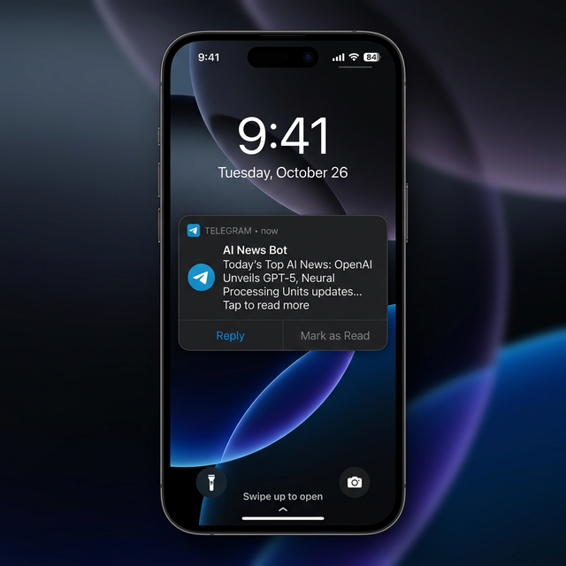
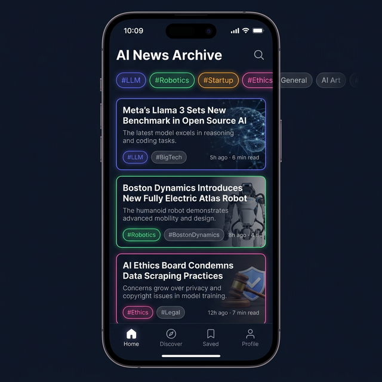
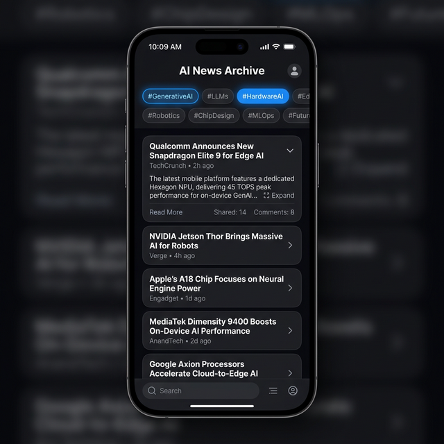
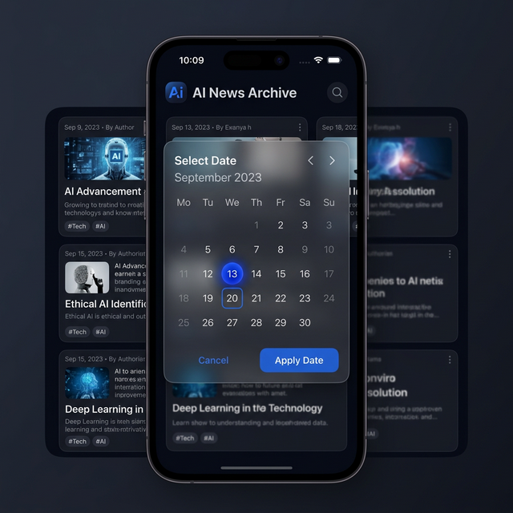
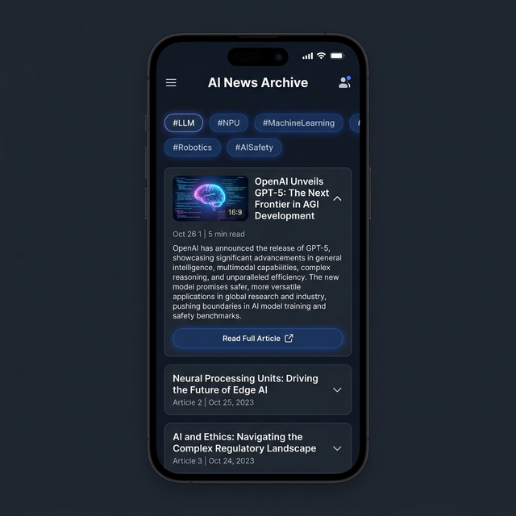
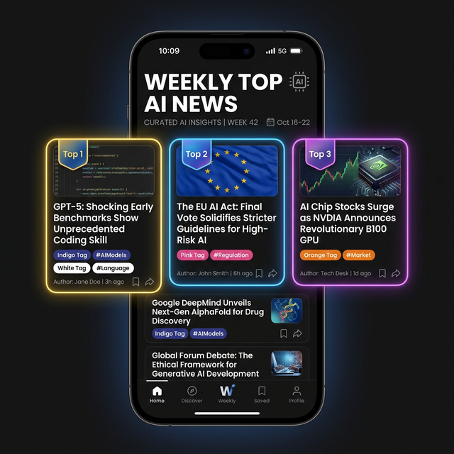
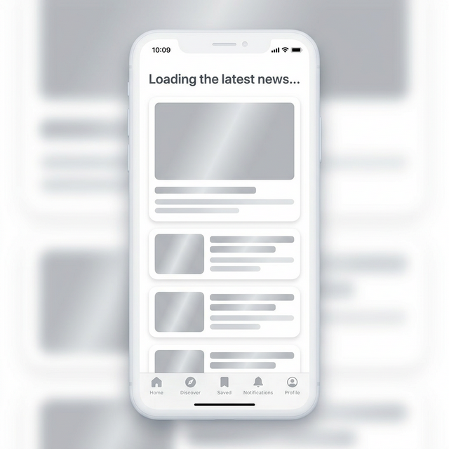
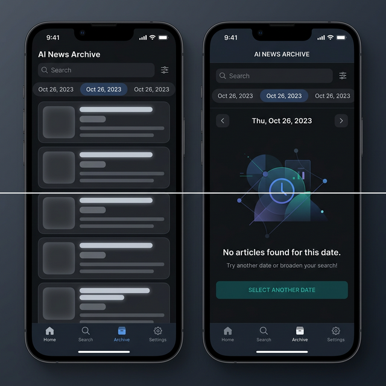

AI News Archive
📱 Mobile UI Scenarios Guide
🟢 모바일 시나리오 1: 데일리 루트 (출근길 리딩)
아침 출근길 텔레그램 알림을 통해 스마트폰으로 오늘의 주요 카드를 훑어보는 플로우입니다.

Step 1. 알림 수신
텔레그램 푸시 알림 확인 및 미리보기 3건 리딩 후 탭
➔

Step 2. 메인 화면 진입 및 퀵 스캐닝
스크롤과 아코디언 컴포넌트를 활용하여 관심 뉴스 상세 요약을 확인
🔵 모바일 시나리오 2: 태그 필터링을 통한 딥다이브
특정 분야의 기술 키워드(#HardwareAI, #EdgeAI 등)에 관련된 기사만 모아서 좁은 화면 내에서 편하게 탐색하는 플로우입니다.
Step 1. 상단 칩 스와이프 탐색
최상단의 '인기 태그 Top 20'가 배치된 가로 스크롤 영역에서 칩 탐색
➔

Step 2. 특정 태그 활성화 및 몰아보기
선택된 태그(#HardwareAI 등)만 필터링되어 모바일 리스트 UI 갱신
🟡 모바일 시나리오 3: 팝업 캘린더를 활용한 과거 조회
화면 공간이 좁은 모바일 특성상, 전체 화면이나 글래스모피즘(Glassmorphism) 팝업 형태의 달력을 띄워 직관적인 터치로 날짜를 이동하는 플로우입니다.

Step 1. 날짜 탐색팝업 호출
상단 네비게이션바의 달력 뷰를 눌러, 직관적으로 지난 과거의 특정 날짜를 찾아 선택
➔

Step 2. 과거 뉴스 렌더링
해당일의 데이터로 모바일 리스트 뷰가 갱신되어 소비
🏆 모바일 시나리오 4: 주간 베스트 (Weekly Top 3) 조회 (PO 피드백)
주말에 발행되는 "주간 베스트 뉴스"를 확인하는 플로우입니다. 일반 뉴스 카드와 차별화된 프리미엄 UI로 강조됩니다.

주간 베스트 뷰 조회
발광하는 네온 보더라인과 순위 뱃지(Top 1~3)를 통해 주요 뉴스의 시각적 위계를 차별화합니다.
⚠️ 모바일 시나리오 5: 안심시키는 로딩(Shimmer) 및 예외 상태 (UX/FE 피드백 반영)
단순한 회색 뼈대(에러 오해) 대신 빛이 흘러가는 쉬머(Shimmer) 애니메이션과 친절한 문구를 사용하여 데이터 로딩 대기 시 불안감을 없앤 상태 화면입니다.

로딩 (Shimmer Skeleton) 뷰
"최신 뉴스를 불러오는 중입니다..."라는 명확한 문구와 함께, 블록 위로 부드러운 빛이 흘러가는 쉬머 애니메이션을 띄워 사용자 이탈을
방지합니다.

엠티 (Empty) 뷰 제한적 사용
해당 날짜에 기사가 0 건일 경우에만 나타나는 일러스트 기반의 엠티 뷰입니다.